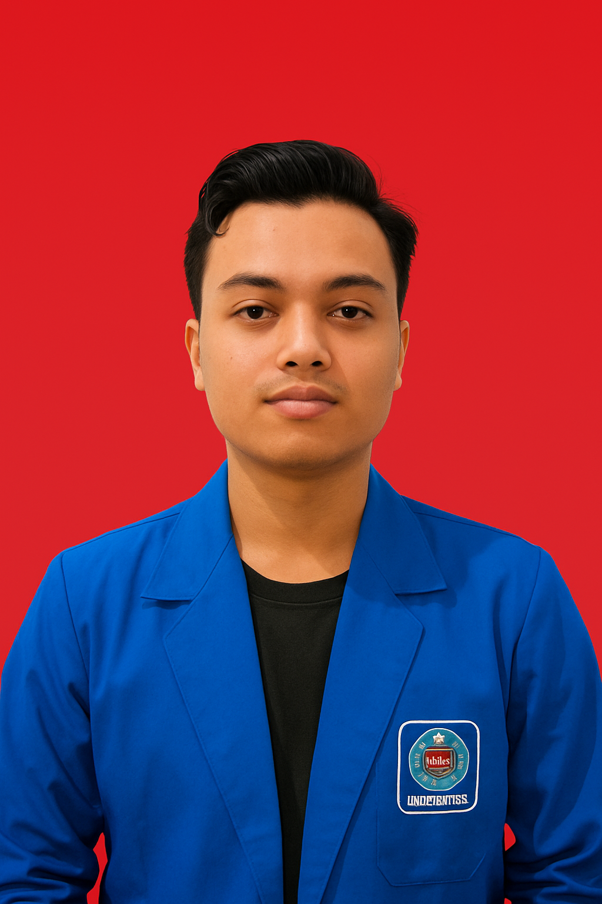
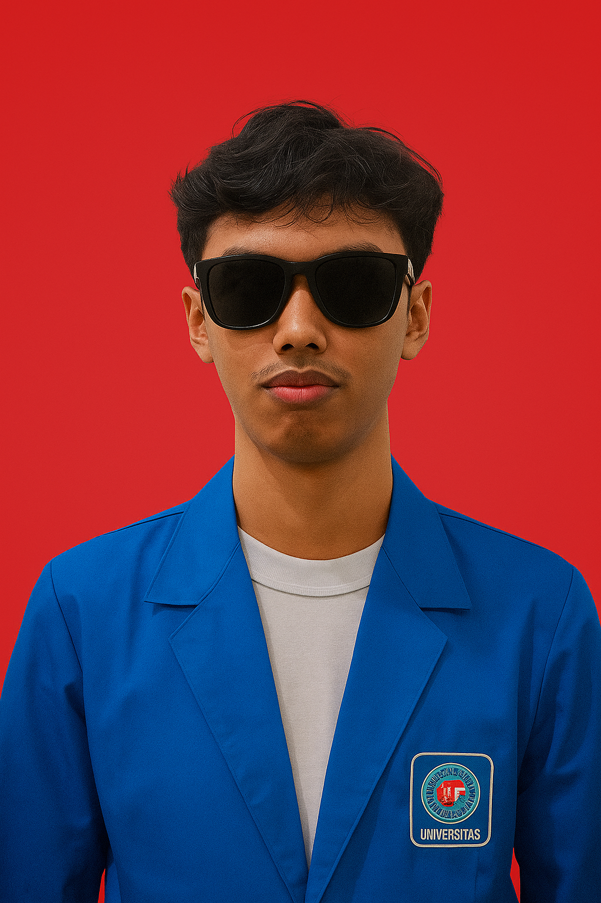
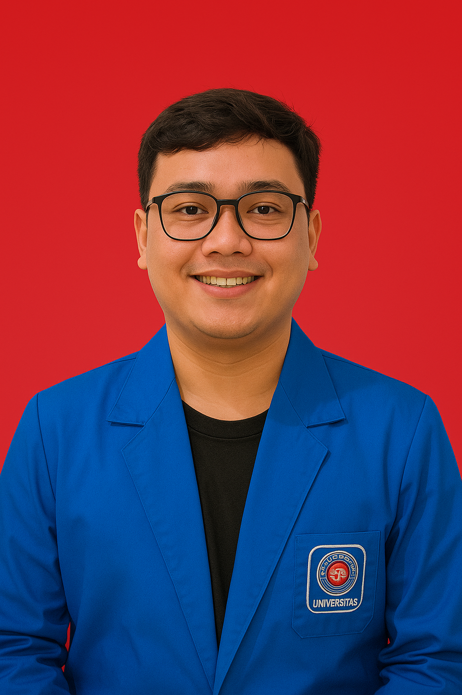
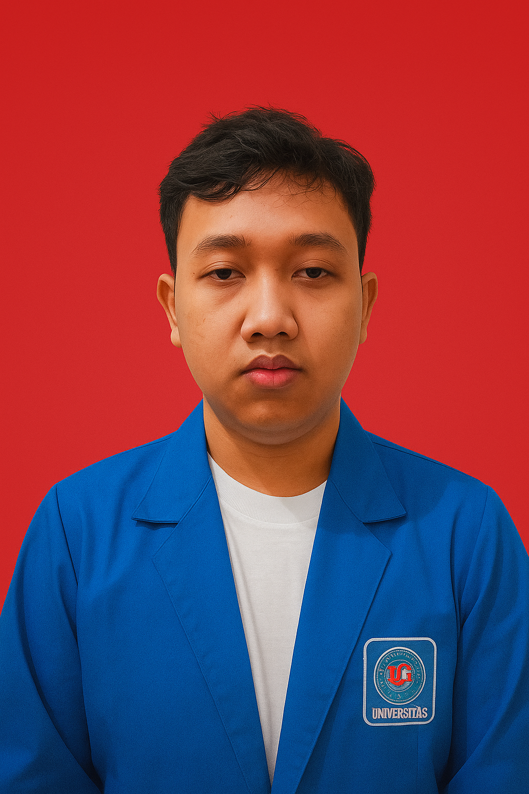
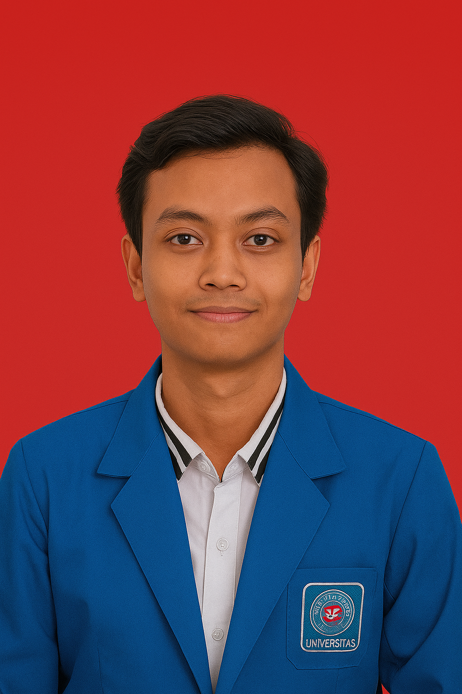

Tentang Kami
Kami adalah Kelompok 3, tim di balik layar yang menghadirkan museum artefak ini ke ruang digital Anda. Tugas ini kami buat atas tugas akhir kami dengan projek web progaming. Web ini dibuat dengan semangat untuk menggali masa lalu dan inovasi untuk masa depan, kami membangun website ini sebagai wujud kecintaan kami pada sejarah.
Wajah Kelompok Kami

Ketua Kelompok
Brian Prayogo Rohmat (19240024)

Anggota Kelompok
Ilham Surya Mandala (19240569)

Anggota Kelompok
Andre Gusti Saputra(19240229)

Anggota Kelompok
Muhammad Farizan Malika (19240456)

Anggota Kelompok
Omar Alifudin(19240489)